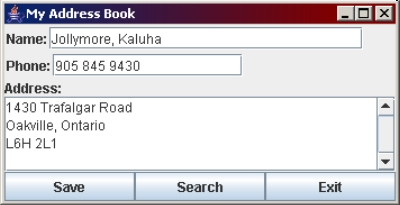
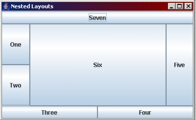
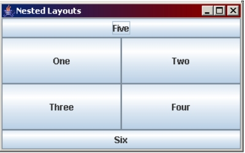
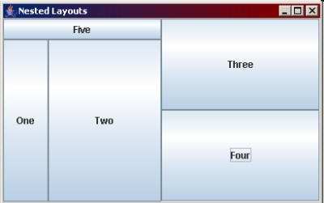
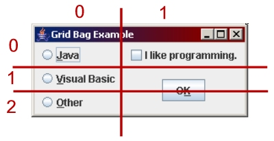

One of the more difficult parts of writing the constructor for your interface is knowing what size your frame should be. You can eliminate this confusing decision by using the pack() method of the JFrame object. This method calculates the preferred size of components and containers and adds them together, then uses this information to pack the components together and set the size of the frame.
Try it out so you can see the difference. In your previous examples, comment out the setSize() method and add the pack() method, before setVisible().
In many of the examples we did in the previous session, you noticed that when you resize your frames, the components shift position, wrap around to a new line, or change size. You can eliminate this behavior by using nested flow layouts. You will also often combine layouts in order to get a specific look to your interface. We combine layouts by creating Panel objects (these are just another type of container, but they are invisible to the user, so they're perfect for programming interfaces). We can assign a layout to a panel, and then add that panel to another container. Doing this with many panels means you can combine layouts. Sometimes we call this "nesting layouts" because we are placing one panel (with a particular layout) inside another container (with another layout). For example, the following interface uses nested layouts:

To make use of nested layout managers, we often create one or more JPanel objects. A JPanel is just a simple container that is invisible to the user, but it includes the setLayout() method so you can give it any layout you want. You can also give the JPanel it's layout manager object in the constructor, if you prefer. JPanel also has the add() method so you can add components to a panel. Other than that, there is little functionality in JPanel, it simply contains other components (including other JPanel objects).
For example, if I wanted to create a panel that contained two buttons in a 1-by-2 grid, I might type code such as:
JButton cmdSearch = new JButton("Search");
JButton cmdExit = new JButton("Exit");
JPanel pnlButtons = new JPanel(new GridLayout(1, 2));
pnlButtons.add(cmdSearch);
pnlButtons.add(cmdExit);
A JPanel is a container, and a component, so you can place the panel pnlButtons into another container that is only allowed to contain one object. For example, recall that in GridLayouts and BorderLayouts, a cell can only contain one component. If I want these two buttons to go into the SOUTH cell of a BorderLayout, I can just put pnlButtons in the SOUTH cell:
this.setLayout(new BorderLayout()); this.add(pnlButtons, BorderLayout.SOUTH);
When you are designing an interface that has multiple and nested layout managers, it's a good idea to sketch the interface on paper and see if you can figure out where the layouts lie. Try these examples for practice:



Create the Address Book interface shown near the beginning of this section.
You will notice that you haven't have much control over the size of your components when you use certain layout managers. This is because a component's preferred size becomes the preferred size of it's cell or container. You can change this in some cases by using a component's setPreferredSize() method.
the setPreferredSize() method takes a Dimension object. A Dimension object's constructor takes an int value for width and an int value for height. For example, the following statement will set a JButton's preferred size to 100 x 25 pixels:
cmdExit.setPreferredSize(new Dimension(100, 25));
GridBagLayout provides more flexibility in laying out components on the screen. It works a lot like HTML tables, where cells can span multiple rows and/or columns. Using GridBagLayout takes some getting used to and can be hard to learn, but once you get the idea, you�ll find it makes layouts easier!
GridBagLayout uses 2 classes: GridBagLayout, which is the actual layout manager class, and GridBagConstraints, which is the class that helps you to define the constraints or characteristics of the cells and components. Constraints include things like how many rows and columns a component should take up, how it is aligned, how it fits inside the cell, and some other aesthetic characteristics. The nice thing about the GridBagConstraints object is that you can use the object to define constraints for one component, and when you�re done you can use it again to define constraints for the next component.
We'll see how GridBagLayout works by using an example. After designing your interface, you need to make a copy of the sketch and draw a grid over it. Look for areas that might be rows and columns - you need to divide your interface into a grid. Assign numeric values to each row and column, starting with 0. See the example image below.

Looking at the diagram above, we see that the Java radio button is in cell 0, 0 and takes up 1 row and 1 column. We also see that the VB radio button is in cell 0, 1 and takes up 1 row and 1 column. Similarly, the Other radio button is in cell 0, 2 and takes up 1 row and 1 column. The three radio buttons appear to be left-aligned. The check box is in cell 1, 0, takes up 1 row and 1 column, and seems to be centered in its cell. The OK button is in cell 1, 1 and takes up 2 rows and 2 columns. The OK button is also centered in it's set of cells.
Noting these characteristics are important when you are ready to set up the constraints object for each component. The GridBagConstraints object has a set of public attributes that you can access directly to set up your constraints for each object:
To create a new GridBagConstraints object, you use the default constructor:
GridBagConstraints gbCon = new GridBagConstraints();
To use a GridBagLayout to set up your interface, just follow the following steps:
To apply the constraints, you use the setContraints() method of the GridBagLayout object, passing in the object and the constraints object as arguments:
// create layout object GridBagLayout g = new GridBagLayout(); // set layout of the frame this.setLayout(g); // create constraints object GridBagConstraints gbCon = new GridBagConstraints(); // setting up constraints for sample object called cmdStuff: gbCon.gridx = 0; gbCon.gridy = 0; gbCon.gridwidth = 1; gbCon.gridheight = 1; gbCon.fill = GridBagConstraints.NONE; gbCon.anchor = GridBagConstraints.WEST; gbCon.insets = new Insets(2, 5, 2, 5); // apply the constraints for this object g.setConstraints(cmdStuff, gbCon);
See if you can set up the interface in the example (option buttons, check box, and OK button) using GridBagLayout and GridBagConstraints.